-----Haloalkane
-----Ammonia (NH3)
-----Ammonia must be in excess, and dissolved in ethanol.
-----The mixture must be heated under pressure, to prevent the ammonia escaping.
Bromoethane → ethylamine
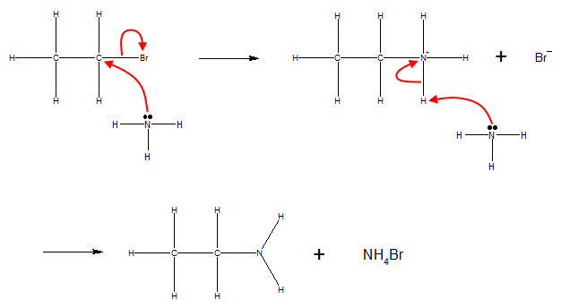-----Alkane
-----Halogen
-----UV radiation (to break the X-X bond, where X is a Group 7 element).
-----RTP is sufficient.
Ethane → Bromoethane
Initiation: (The halogen molecule splits homolytically)
Br2 → 2Br●
Propagation: (The halogen radicals react with alkanes, forming alkyl radicals. These then react with the halogen, reforming the radicals)
●Br + CH3CH3 → ●CH3CH2 + HBr
●CH3CH2 + Br2 → ●CH3CH2Br + ●Br
Termination: (Free radicals react together to form stable molecules) e.g.
●Br + ●CH3CH2 → CH3CH2Br etc.
-----Alkene
-----X2 (where X = F, Cl, Br...)
-----The halogen should be dissolved in organic solvent.
-----RTP is sufficient.
Ethene → Dibromoethane
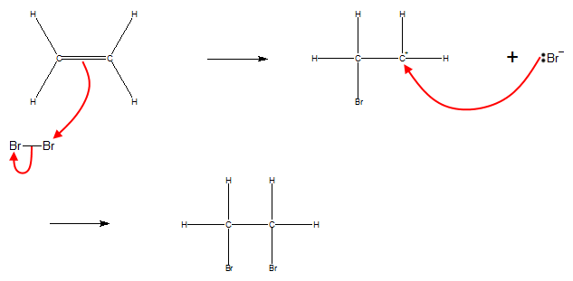-----Haloalkane
-----KCN
-----Heat.
-----Haloalkane in an aqueous ethanolic solution.
Bromoethane → Propanenitrile
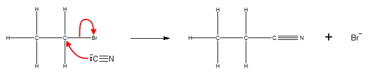-----Haloalkane
-----KOH
-----Heat.
-----Haloalkane dissolved in ethanol.
-----KOH is concentrated.
The reaction of a haloalkane with a hydroxide ion depends on the reaction conditions. The conditions favouring a particular reactant are shown below:
| Condition | Alcohol | Alkene |
| Solvent | Aqueous solution | Ethanolic solution |
| Temperature | Room Temperature | High Temperature |
| Concentration of OH- | Dilute | Concentrated |
Additionally, tertiary haloalkanes are more likely to form alkenes, whilst primary haloalkanes are more likely to form alcohols.
#1 Tertiary and secondary haloalkanes (i.e. those where the carbon in the C-X bond has more than one C-C bond to it) can form isomers, depending on which carbon atom loses a hydrogen. Additionally, these isomers can also have geometric isomers.
#2 By the same reasoning, if there are no carbons adjacent to the C-X carbon that are bonded to any hydrogens, the reaction cannot occur.
Bromoethane → Ethene
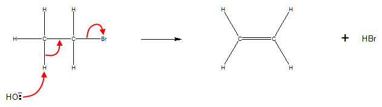-----Alkene
-----HX (where X = F, Cl, Br...)
-----RTP is sufficient.
Ethene → Bromoethane
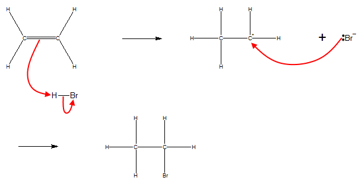-----Haloalkane
-----KOH
-----KOH is in aqueous solution.
-----Haloalkane is dissolved in ethanol (to encourage mixing).
-----Reflux
The reaction of a haloalkane with a hydroxide ion depends on the reaction conditions. The conditions favouring a particular reactant are shown below:
| Condition | Alcohol | Alkene |
| Solvent | Aqueous solution | Ethanolic solution |
| Temperature | Room Temperature | High Temperature |
| Concentration of OH- | Dilute | Concentrated |
Additionally, tertiary haloalkanes are more likely to form alkenes, whilst primary haloalkanes are more likely to form alcohols.
Bromoethane → Ethanol
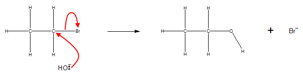-----Alcohol
-----H2SO4
-----NaX (where X = F, Cl, Br...)
Note: The reaction forms HX in situ. Hence HX can also be used directly.
----- Reflux
Ethanol → Bromoethane
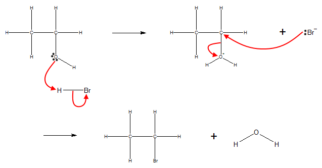NOTE #2: There are multiple ways of doing this reaction, and this method doesn't work for all haloalkanes (or it's too slow to be useful e.g. primary chloroalkanes). I also can't find this reaction on the AQA spec, so the above is shamelessly ripped from an OCR textbook and chemguide (every A-level chemistry student's best friend after caffeine). TL,DR: Take this information with a pinch of salt, because I doubt it's accurate.
-----Alcohol
-----H2SO4 (catalyst)
-----High temperature (540K)
-----H2SO4 is hot, concentrated and in excess
#1 Tertiary and secondary alcohols can form isomers, depending on which carbon atom loses a hydrogen. Additionally, these isomers can also have geometric isomers.
#2 By the same reasoning, if there are no carbons adjacent to the C-O carbon that are bonded to any hydrogens, the reaction cannot occur.
Ethanol → Ethene
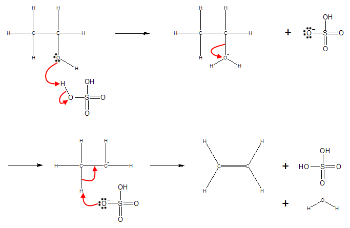-----Alkene
-----H2O
-----H3PO4 (catalyst)
-----High temperature (570K).
-----High pressure (6500kPa).
Ethene → Ethanol
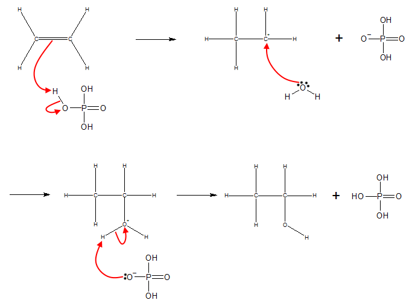LOW DENSITY POLYETHENE (electrical insulation, packaging):
----- High temperature
----- High pressure
(These conditions encourage chain branching, making LDPE flexible, with a low melting point)
HIGH DENSITY POLYETHENE (crates, bottles):
----- Low temperature (just above room temperature)
----- Low pressure (slightly greater than 1 atm)
----- Ziegler-Natta catalyst
(This reduces the amount of chain branching, making HDPE strong, with a high melting point)
-----Secondary alcohol
-----K2Cr2O7
-----H2SO4 (to acidify the potassium dichromate)
----- Reflux
-----Ketone
-----NaBH4
-----NaBH4 in aqueous solution.
Propanone → Propan-2-ol
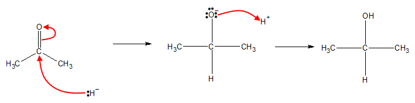-----Ketone
-----KCN
-----HCl (to acidify the KCN)
-----HCl is dilute.
-----RTP is sufficient.
Propanone → 2-hydroxy-2-methylpropanenitrile
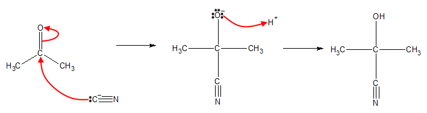-----Primary alcohol
-----K2Cr2O7
-----H2SO4 (to acidify the potassium dichromate)
-----Excess Alcohol
-----Dilute H2SO4
-----Distillation
-----Aldehyde
-----NaBH4
-----NaBH4 in aqueous solution.
Ethanal → Ethanol
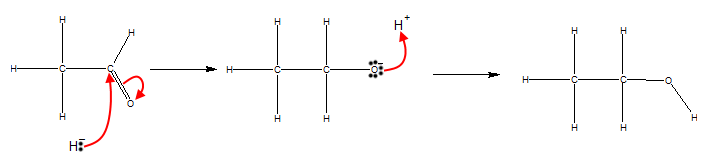-----Aldehyde
-----KCN
-----HCl (to acidify the KCN)
-----HCl is dilute.
-----RTP is sufficient.
Ethanal → 2-hydroxypropanenitrile
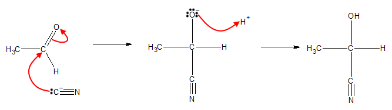-----Nitrile
-----H2O
-----H2SO4
-----Heat.
-----Aldehyde (or primary alcohol)
-----K2Cr2O7
-----H2SO4 (to acidify the potassium dichromate)
-----Excess K2Cr2O7
-----Concentrated H2SO4
-----Reflux